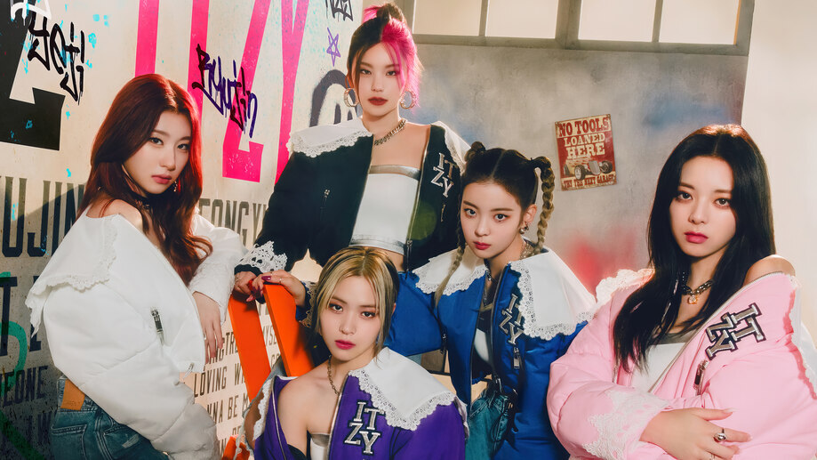

KPOP
BLΛƆKPIИK
Blackpink is a South Korean girl group formed by YG Entertainment, consisting of members Jisoo, Jennie, Rosé, and Lisa. The group debuted in August 2016 with their single album Square One, which featured "Whistle" and "Boombayah", their first number-one entries on South Korea's Gaon Digital Chart and the Billboard World Digital Song Sales chart, respectively.
IU

Lee Ji-eun, known professionally as IU, is a South Korean singer, songwriter, and actress. The name IU is a combination of 'I' and 'you' meaning "you and I become one through music." She signed with Kakao M in 2007 as a trainee and debuted as a singer at the age of fifteen with her first mini album Lost and Found.
Twice

Twice is a South Korean girl group formed by JYP Entertainment. The group is composed of nine members: Nayeon, Jeongyeon, Momo, Sana, Jihyo, Mina, Dahyun, Chaeyoung, and Tzuyu. Twice was formed under the television program Sixteen and debuted on October 20, 2015, with the extended play The Story Begins.
Itzy
Itzy is a South Korean girl group formed by JYP Entertainment and consisting of members Yeji, Lia, Ryujin, Chaeryeong, and Yuna. They debuted on February 12, 2019, with the release of their single album It'z Different.